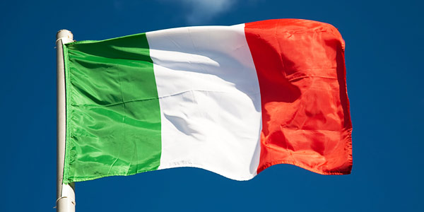
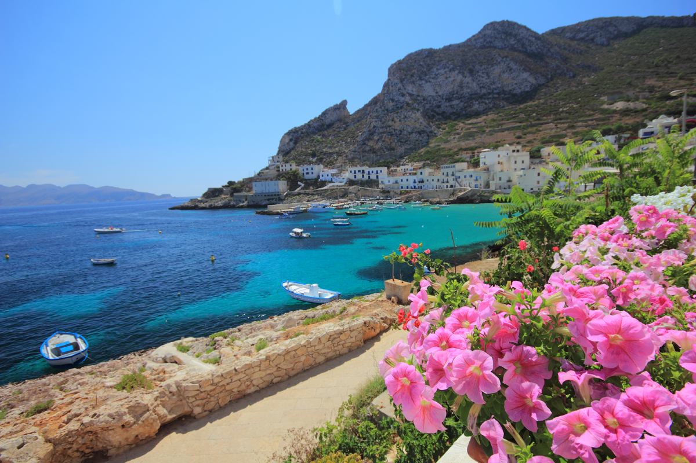
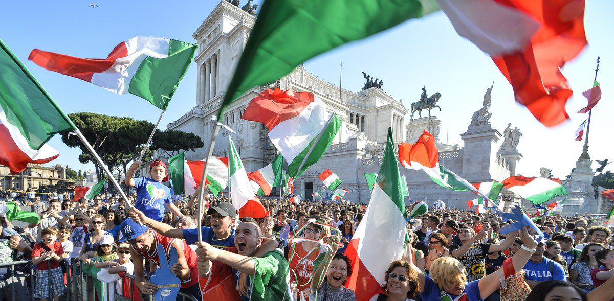

Италия
География
 Материковой части Италия включает в себя острова Сицилия, Сардиния и ряд более мелких. Общая площадь страны, включая крупные острова, составляет 301 230 км. Граничит Италия с Францией, Австрией, Словенией и Швейцарией, кроме того в пределах самой страны расположены крошечные государства Сан–Марино и Ватикан. Италия расположена в бассейне Средиземного моря и с трёх сторон окружена водой. На востоке Италия омывается Адриатическим морем, на западе – Лигурийским и Тирренским, а на юге – Ионическим морем. Ландшафт итальянского берега неоднороден: здесь встречаются и скалистые побережья и пляжи с золотистым мелким песком. В Италии пролегают две крупные цепи гор, которые привлекают сюда множество туристов для занятия горнолыжным спортом: Альпы и Апеннины, занимающие 35% территории страны. Особенностью Италии является то, что здесь расположено немало вулканов, некоторые из которых являются единственными действующими вулканами на европейском материке: Везувий, Этна, Стромболи.
Климат

Вытянутая с севера на юг форма страны, и протяжённые горные цепи обуславливают изменение климата в зависимости от региона. На севере климат умеренный – жаркое лето (июль от +22°С до +24°С) и холодная туманная зима (январь – около 0°С). В центральной части климат субтропический средиземноморский, для него характерно длительное и жаркое лето, и мягкая дождливая , температура летам от +24 до +26°С, зимой обычно не опускается ниже +4°С. На юге полуострова с марта по октябрь дуют сухие жаркие ветра из Сахары, и в этот период в южной части страны температура может подниматься до +35 - + 40°С, средняя температура зимой составляет около +5°С. Каждое время года предоставляет возможности для разных видов туризма. Зимой можно наслаждаться горными лыжами, летом заниматься альпинизмом и отдыхать на морских курортах. Климат Италии осенью и весной подходит для экскурсий по городам–сокровищницам мирового культурного достояния. Пляжный сезон начинается во второй половине мая и заканчивается в конце сентября. Средняя температура воды в этот период от +21 до + 25°С. Любители же зимнего отдыха могут покорять горные склоны Италии с начала декабря по март, в некоторых районах Италии по апрель.
Население
 Население Италии составляет более 60 миллионов человек.
В конце XIX века Италию стали покидать жители северных районов – итальянцы устремлялись в другие страны (США, Бразилия, Аргентина, Центральная Европа).
Что касается иммиграции, в 90-е годы возросло число иностранцев, проживающие в Италии на легальных основаниях. Так, многочисленными являются такие диаспоры, как румынская, албанская, марокканская.
Национальный состав:итальянцы (95%)немцы, французы, арабы, албанцы и другие нации (5%).
В последнее время в разы увеличилась численность иностранцев, приезжающие в Италию на ПМЖ – на 1 итальянца сегодня приходится 60 иностранцев.
В среднем на 1 км2 проживает 200 человек, но, например, в Кампании на 1км2 проживает 420 человек, в Ломбардии – 410, а в Лигурии – 298 человек.
Самым многонаселенным итальянским городом является Рим (здесь проживает свыше 2 миллионов жителей), а малонаселенным – Педезина (тут живет всего 30 человек).
 Итальянская кухня традиционно известна во всем мире как одна из самых оригинальных и артистичных. Однако по сути своей местная кулинария представляет собой богатую и колоритную народную традицию, активно "перерабатываемую" кулинарами всего мира в нечто, имеющее ярлык "итальянская кухня". В пределах же самой страны "современная" кухня прижилась только в северных областях, граничащих с Францией и Альпами, да в крупных промышленных городах. Все остальные регионы Италии продолжают использовать сытную и достаточно простую народную кухню, построенную на сочетании морепродуктов, зелени, оливкового масла, овощей и вина.
Основа практически всех исконно национальных блюд - тесто и различные макаронные изделия, большое количество сыра и молочных продуктов, рыбы, зелени и специй, овощей, а также мяса и зерновых культур. Традиции народной кухни в Италии очень сильны, во многих высококлассных ресторанах блюда готовят по рецептам, известным ещё с эпохи Пунических войн, и очень этим гордятся. Причем в каждом из двадцати регионов страны существуют десятки собственных рецептов даже самых простых и известных блюд, а отличием продукции местных поваров от "соседей" принято гордиться и всячески превозносить их достоинства. Поэтому не будет большим преувеличением заметить, что кулинария как таковая превратилась в Италии в национальный культ, а местные мастера достигают в этой области больших высот.
Итальянская кухня традиционно известна во всем мире как одна из самых оригинальных и артистичных. Однако по сути своей местная кулинария представляет собой богатую и колоритную народную традицию, активно "перерабатываемую" кулинарами всего мира в нечто, имеющее ярлык "итальянская кухня". В пределах же самой страны "современная" кухня прижилась только в северных областях, граничащих с Францией и Альпами, да в крупных промышленных городах. Все остальные регионы Италии продолжают использовать сытную и достаточно простую народную кухню, построенную на сочетании морепродуктов, зелени, оливкового масла, овощей и вина.
Основа практически всех исконно национальных блюд - тесто и различные макаронные изделия, большое количество сыра и молочных продуктов, рыбы, зелени и специй, овощей, а также мяса и зерновых культур. Традиции народной кухни в Италии очень сильны, во многих высококлассных ресторанах блюда готовят по рецептам, известным ещё с эпохи Пунических войн, и очень этим гордятся. Причем в каждом из двадцати регионов страны существуют десятки собственных рецептов даже самых простых и известных блюд, а отличием продукции местных поваров от "соседей" принято гордиться и всячески превозносить их достоинства. Поэтому не будет большим преувеличением заметить, что кулинария как таковая превратилась в Италии в национальный культ, а местные мастера достигают в этой области больших высот.